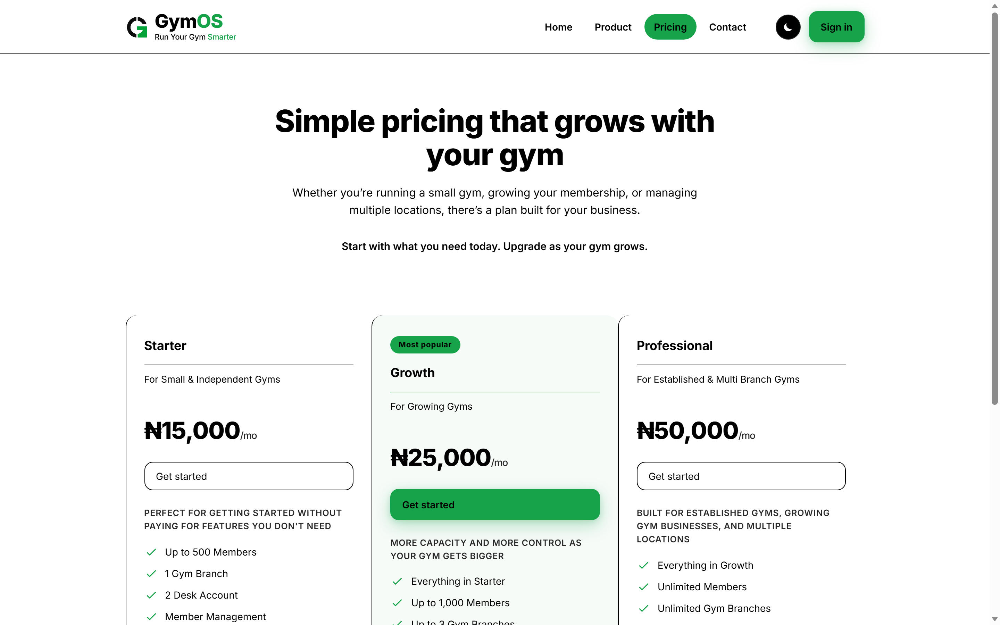

Everything you need to sell GymOS and support the gyms you bring in — how the whole product works, what to tell an owner, and how you get paid.
For affiliate marketers
Know the product better than they do
Quote the right plan and price
Answer the calls you will get
Understand exactly how you are paid
Your gym. Simplified.
gymos.africa
What's in this guide
Why this guide is longYou are the first person they call
What GymOS actually isAnd the two things every member pays for
What you are sellingThe three plans, the prices, and free trials
The three ways it runsDesktop app, phone app, browser
Who can see whatThe four roles, and the walls between them
The owner's sideEvery screen they will ask you about
The front desk's sideThe screen that gets used all day
The rules that cause the most questionsLearn these five properly
When the internet is downThe offline story, in plain words
Subscriptions, trials and lockingWhat happens when it runs out
Your own portalYour gyms, your earnings, your details
How you get paidRate, timing, and the account it lands in
Bringing a gym on boardFrom first conversation to first check-in
The calls you will getReal questions, straight answers
What you must not promiseThe limits of what you can do
One page to keepThe whole product on a single sheet
Chapter 1
Why this guide is long
Because when something confuses a gym owner, they do not ring the company. They ring you.
You are the person who sat with them, showed them the software and got them started. To that owner, you are GymOS. If they cannot find their revenue for last month, or their receptionist says a member is blocked when they shouldn't be, your phone is the one that rings.
That is why this guide covers the whole product and not just your own portal. You do not need to be able to use every screen daily. You do need to be able to answer, without guessing, the question an owner asks you on a Saturday morning.
The standard to aim for
You should be able to explain why the software did something, not just what it did. An owner who understands the rule stops ringing about it. An owner who is only told "that's how it works" rings again next week.
How to use this
Read chapters 2 to 5 before your first sales conversation
Read chapters 6 to 10 before you hand a gym over and walk away
Keep chapter 14 open on your phone — it is the questions you will actually be asked
Chapter 16 is one page; screenshot it
Chapter 2
What GymOS actually is
A front desk system for a gym. Who is a member, are they paid up, let them in, and what did we take today.
Strip away everything else and GymOS does four things:
It does this
Which means
Holds the members
Names, phones, photos, next of kin, and anything else that gym wants to ask.
Answers "can this person come in?"
One search, one clear green or red answer at the desk.
Records the money
Every payment, who took it, and when — and it cannot be quietly edited afterwards.
Records who came
Attendance, so the owner can see whether the gym is actually busy.
The single most important idea
Every member pays for two separate things, and they are tracked separately. Almost every confused phone call you get will come back to this.
The two things
What it buys
Membership
The right to come into the gym at all. Without this, no entry.
Equipment
The right to use the machines. A gym can sell this daily, monthly, or however they like.
So a member can be paid up for membership and not for equipment. They can still come in — they just should not be on the machines. The desk sees both boxes at a glance.
Say it like this
"Membership gets them through the door. Equipment gets them on the machines. You can charge for them separately, and the desk sees both."
Chapter 3
What you are selling
Three plans. The differences are size and branches, not features being locked away.

The public pricing page. Anyone can see this at gymos.africa — you can send an owner straight to it. ! The prices here are the live ones; if they ever change, this page changes with them.
Plan
Price
Who it suits
Starter
₦15,000 / month
Small and independent gyms. Up to 500 members, one branch, two desk accounts.
Growth
₦25,000 / month
Growing gyms. Up to 1,000 members and up to 3 branches. This is the one most gyms land on.
Professional
₦50,000 / month
Established and multi-branch. Unlimited members, unlimited branches.
Sell the stage, not the feature list
Nothing is watered down on Starter. A gym on Starter gets the same check-in, the same reports, the same offline desk app as one on Professional. What they are buying more of is size — members, branches, desk accounts. So the question is never "what do you need?", it is "how big are you, and how fast are you growing?"
Free trials
A gym can be started on a free trial — one, two, three or six months of the complete product, free. Nothing is limited during a trial.
The trial is set when the gym is created, so ask for it before the account is made
Their Settings page shows Free trial and the date it ends
When it ends the gym locks exactly like an unpaid subscription — and nothing is lost; it all comes straight back when a paid plan is added
A trial is not a commission
A free trial records no payment, so it earns you nothing while it runs. You are paid when they actually start paying. That is worth knowing before you promise a six-month trial to close a deal — you have also delayed your own first payout by six months.
Chapter 4
The three ways it runs
Same software, same data, three ways to open it. Owners ask this constantly.
Way in
Best for
What to know
Desktop app (installed .exe)
The front desk computer
The only one that keeps working with no internet. Owners get the installer from inside GymOS, on their Downloads page.
Phone app (added to home screen)
A gym with no desk computer
The website, added to the phone's home screen, so it opens like an app. Needs internet.
Browser
The owner checking in from anywhere
Just go to the site and sign in. Needs internet.
The honest answer to "do I need a computer?"
No. A gym can run entirely from the receptionist's phone. But the desk app on a cheap laptop is the only setup that survives the internet going down mid-shift, and that is the setup you should recommend to anyone taking real money at a busy door.
Signing in stays put
GymOS signs an untouched screen out after 6 hours — longer than a shift, so it should not interrupt anybody mid-desk. Closing the app does not sign anyone out. If two people share a desk, they should press sign-out at handover rather than waiting for the timer.
Chapter 5
Who can see what
Four kinds of account. The walls between them are deliberate, and owners will test them.
Role
Sees
Cannot
Owner
Everything about their own gym: members, money, attendance, staff, settings.
See another gym. Register their own gym. Undo a payment or a check-in.
Receptionist
The desk: check-ins, sign-ups, payments, and the money they themselves took.
See the gym's full revenue, add staff, change plans or prices.
You (marketer)
The gyms you brought in — name, status, owner's name and phone — and what you have earned.
See any gym's members, money, or attendance. Sign in as them.
Your provider
The platform side: creating gyms, subscriptions, marketers.
—
Be straight about this one
You cannot see a gym's members, payments or attendance — not even for a gym you brought in. If an owner asks you to look something up inside their gym for them, you cannot, and you should say so plainly. Walk them to the screen instead. That boundary is what makes it safe for them to sign up through you.
Chapter 6
The owner's side
The screens an owner lives in. Know these well enough to talk somebody through them on the phone.
Dashboard. Five numbers across the top — today's attendance, today's revenue, this week's revenue, active members, and how many memberships expire in the next 7 days — then two graphs for the last 14 days.
Screen
What it is for
Dashboard
The morning glance. Is the gym busy, is money coming in, is anything about to expire.
Members
The whole list, searchable, with a filter. Tap a row for one member's full page.
Attendance
Who came, and when, over a date range they choose.
Finances
Every payment the gym took, by period, with the receptionist's name on each row.
Expiring soon
Two lists — about to expire, and already expired. This is the renewals call sheet.
Team
Add a receptionist, reset their password, suspend an account.
The desk installer and their own copy of the Owner's Guide.
Finances. The receptionist's own money page shows the same payments — just theirs only. So an end-of-shift check is two views of identical numbers, which is exactly how a disagreement gets settled.
The demo that closes deals
Open Expiring soon. Say: "this is next week's money, and it found itself." Most gym owners are tracking renewals in a notebook or not at all, and this is the screen where that lands.
Chapter 7
The front desk's side
One screen, used hundreds of times a day. If this is slow or confusing, the gym stops using the software.
Check-in. Type a name, a phone number or a member number. Everyone matching appears underneath. Tap the row to open them.The verdict. Membership and equipment side by side, then one banner that says whether they get in. Here membership is fine but equipment has expired, so the banner reads Entry blocked.
What a receptionist can do
Find a member and record their attendance
Sign up a brand new member
Take a renewal or an equipment payment
See what they themselves collected this shift
They cannot see the gym's total revenue, add staff, or change prices. That is the owner's job, and it is a deliberate wall — a receptionist handling cash should not also be able to change what things cost.
Chapter 8
The rules that cause the most questions
Five rules. Learn them properly and you will answer most support calls in one sentence.
Rule
Why it works that way
Both boxes green for "Entry allowed"
Membership and equipment are counted separately. Green membership + red equipment is a real, normal state.
Checking in only needs membership
Equipment can be red and the person can still be checked in. They just should not be on the machines.
Equipment starts at the next check-in
That is what Pending means. A member who pays for equipment today and goes home has not started their time yet. This is the one people ring about most — the desk thinks the payment failed and charges twice.
One check-in per member per day
The button greys out until tomorrow, so the same person cannot be counted twice and inflate the attendance figures.
Payments and check-ins cannot be undone
Not by the desk, not by the owner, not by anyone. The record is evidence. This protects the receptionist as much as the owner — nobody can quietly rewrite what was recorded.
The double-charge call
"They paid for equipment but it still says Pending." Nothing is wrong. It starts counting at their next check-in, so they get the full period they paid for instead of losing a day. Tell the desk not to take the money again.
Chapter 9
When the internet is down
The desk app keeps working. This is the strongest thing you have to sell, so get it right.
On the installed desk app, an internet outage does not stop the gym. The receptionist carries on: checking people in, signing members up, taking payments. It is all saved on that computer immediately.
Work saved offline is real and safe — it is on the machine the moment it is recorded
It is sent up when the internet returns, by pressing send
Until it is sent, the owner cannot see it — their dashboard will look quiet
A receptionist can sign in offline too, as long as they have signed in on that computer before
Set the expectation honestly
The browser and the phone app need internet. Only the installed desk app works offline. If a gym's selling point to you was "our network is terrible", they need the desk app on a computer — say so rather than letting them find out on a busy Saturday.
Chapter 10
Subscriptions, trials and locking
What happens as a subscription runs down, and what it looks like when it stops.
Stage
What it means
What the gym sees
Active
Paid up.
Everything normal.
Grace
Just past the date, inside a short grace period.
Everything still works. Renew now.
Expired
Past the grace period.
Locked everywhere — web, phone and desk app.
Locked
Switched off deliberately.
Locked everywhere at once.
What locked looks like
The whole app is replaced, for the owner and the desk alike, with one message saying access is locked and to contact their provider. Nobody can sign anyone up, check anyone in, or take money.
The sentence that calms an owner down
"Nothing is deleted. Every member, every payment and every visit is still there, and it all comes back the moment it is switched on again." That is true, and it is the only thing they want to hear at that moment.
Note that the desk app locks itself too, even with no internet — it keeps track of time on the machine, and changing the computer's clock does not get round it. Offline is not a way to keep using an expired gym.
Do this and you will never get the angry call
When you hand a gym over, put their expiry date in your own calendar with a week's warning. A gym that locks on a Saturday morning blames the person who sold it to them.
Chapter 11
Your own portal
Sign in the same way anybody else does. You land on your own four screens.
Screen
What is on it
Gyms
Every gym you brought in: name, status, and the owner's name and phone. Tap the phone number to copy it.
Revenue
What you are owed and what you have been paid, plus the full history — date, gym, what they paid, the rate it was worked out at, and what you earned.
Downloads
The desk installer and all three guides — this one, the owner's and the receptionist's. Take them all; you will be asked about both roles.
Settings
Your payout details and your password.
Fill in your payout details before your first payout
Bank, account number and account name — all three. The account name is the name your bank has on the account, which is not always your own name: a business account, or a relative's. Transfers are checked against it. If those boxes are empty when a payout run happens, you cannot be paid in it.
Chapter 12
How you get paid
A share of what the gym pays, every time they pay — not just the first time.
The part most people get wrong
Your commission is recurring. A gym you brought in two years ago that is still paying every month is still earning you money every month. You are not paid a one-off finder's fee.
Every gym is attached to whoever brought them in, decided once at signup and never moved
When that gym pays, your share of that payment is recorded automatically
Your rate is agreed with your provider — some marketers are on their own rate, others on the standard one
Whatever rate a payment was worked out at is frozen onto that row, so a later change never rewrites what you already earned
A free trial records no payment, so it earns nothing until they convert
Your Revenue screen shows the rate against every single earning, so you can always check the arithmetic yourself rather than taking anyone's word for it.
When the money moves
Payouts are made at the end of each month. Until then your earnings sit as pending. Once a payout run happens they move to paid, and your pending balance resets — new earnings start building again straight away.
If a number looks wrong
Check the Revenue history first. Each row names the gym, the amount they paid, the rate and your share. If a gym you brought in is missing from it entirely, that is an attribution problem and worth raising immediately — attribution is set when the gym is created, so it is much easier to fix early than a year later.
Chapter 13
Bringing a gym on board
From first conversation to a working front desk.
Show them the product, not a brochure. Sign into a demo and walk the check-in screen. The verdict banner does more work than any slide.
Size them. How many members, how many branches, how many people on the desk. That picks the plan.
Agree a trial if they need one — and say so before the account is created, because that is when it is set.
Pass the gym over to be created. Give the gym's name, the owner's name and phone, and make sure you are named as the marketer — that is what attaches the gym to you, and it cannot be moved afterwards.
The owner gets a temporary password and is made to set their own on first sign-in.
Sit with them for the setup. Membership tiers, equipment plans, and any extra sign-up questions. A gym that skips this ends up with no plans to sell and blames the software.
Get the desk app installed on the front desk computer, from the owner's own Downloads page.
Add the receptionist and watch them check one real person in.
Give them the guides. The owner's and the receptionist's, from Downloads.
Diary the expiry date with a week's warning.
Step 6 is the one people skip
A gym with no membership tiers set up cannot take a payment, because there is nothing to sell. It is fifteen minutes of work and it is the difference between a gym that uses GymOS and a gym that quietly goes back to a notebook — and then cancels.
Chapter 14
The calls you will get
The real ones, and what to say.
They say
You say
"It says Entry blocked but he has paid."
Two boxes, not one. His membership is probably fine and his equipment has run out. Check both. Membership alone is enough to check him in.
"He paid for equipment and it still says Pending."
Correct. It starts at his next check-in so he gets the full period. Do not charge him again.
"The check-in button is greyed out."
He has already been checked in today. One per person per day, so the numbers stay honest.
"We took a payment by mistake."
It cannot be undone by anyone. Record the correction the way you would in a cash book. That permanence is deliberate.
"My dashboard says nothing happened today."
If the desk has been offline, its work is saved on that machine but not sent yet. Get them to press send at the desk.
"It signed my receptionist out."
After 6 hours untouched. Longer than a shift, so it should not happen mid-desk. Sign in again.
"The whole thing is locked."
The subscription has run out or been switched off. Nothing is lost and it all returns when it is reactivated. Then get them to their provider.
"Can you look up my member for me?"
You cannot — you have no access to their members, by design. Walk them to the screen instead.
"Can I use it on my phone?"
Yes. Add the site to the home screen and it opens like an app. It needs internet, though — only the desk app works offline.
"My receptionist forgot her password."
The owner resets it themselves, from Team. They do not need you or anyone else.
Chapter 15
What you must not promise
Knowing the limits is part of knowing the product. Getting one of these wrong costs you the relationship.
You cannot
So do not say
See, change or look up anything inside a gym
"Send me the member's name and I'll check."
Unlock a locked or expired gym
"I'll get you switched back on now."
Reset an owner's or receptionist's password
"I'll reset it for you." (An owner resets their own staff; owners go to their provider.)
Undo a payment or a check-in
"We can reverse that."
Change a gym's plan, price or expiry date
"I'll extend you by a month."
Move a gym's attribution to yourself later
"Sign up now, I'll get it put under me afterwards."
The last row matters to your own money
A gym is attached to a marketer when it is created, and it is never re-evaluated. If you are not named at that moment, that gym does not earn you anything — not later, not retroactively. Make sure you are named before the account is made, every single time.
Chapter 16
One page to keep
Screenshot this.
The product in six lines
Every member pays for two things: membership (gets in) and equipment (uses machines)
Both green means Entry allowed; membership alone is enough to check in
Equipment starts at the next check-in — Pending is not a failure
One check-in per person per day
Payments and check-ins cannot be undone, by anyone
Only the installed desk app works offline; unsent work is invisible to the owner
The plans
Starter ₦15,000/mo
500 members, 1 branch, 2 desk accounts
Growth ₦25,000/mo
1,000 members, up to 3 branches
Professional ₦50,000/mo
Unlimited members and branches
Your money
Recurring — every payment that gym makes, not just the first
Attribution is set when the gym is created and never moves
The rate is frozen onto each earning; later changes do not rewrite it
Payouts at the end of each month — bank, account number and account name must all be filled in
GymOS — Marketer's Guide. Anything not covered here, or anything that does not match what you see on screen, goes to your provider.
gymos.africa